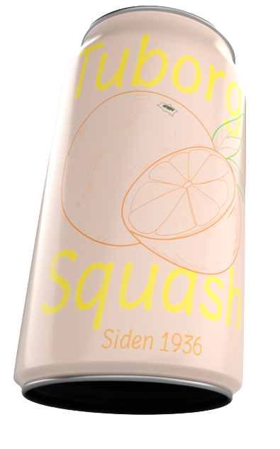

Om Squash
Det er tid til at tage fat om din Tuborg Squash,
åbne den, og nyde smagen af gammel dansk appelsinvand,
mens du læser alt hvad der er at vide om Tuborg Squash.
Tuborg er et dansk ølmærke.
Grundlagt helt tilbage i 1880, og startede tilbage i 1891,
med at producerer mineralvand.
Tuborg Squash er dansk produceret og lanceret helt tilbage i 1936.
Danmarks ældste sodavand, der stadig produceres.
Tuborg Squash blev landskendt,
da de tilbage 1989, lancerede deres første reklamer igennem TV 2.
Senere hen har flere kendte reklamer fra Tuborg Squash,
kørt over skærmene i de danske hjem.
Vogt dem for efterligner!
Hvorfor hedder appelsinsodavanden Tuborg Squash?
Et spørgsmål flere danskere har sat spørgsmålstegn ved.
Squash kommer som mange vil tro, ikke fra grøntsagen af samme navn,
men fra et engelsk udtryk, som betyder at mase eller knuse.
Tuborg Squash var en af de første sodavand i Danmark som indeholdte frugtkød.